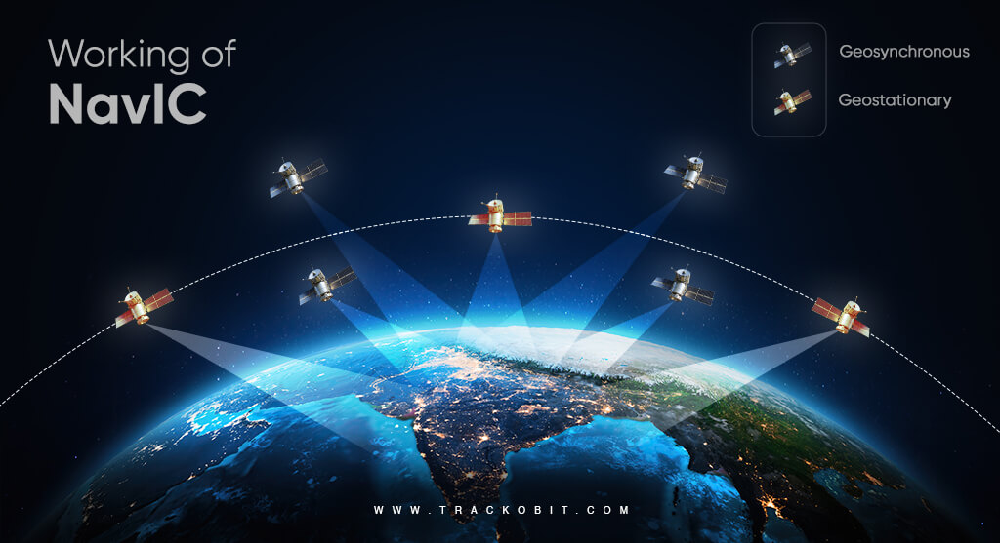
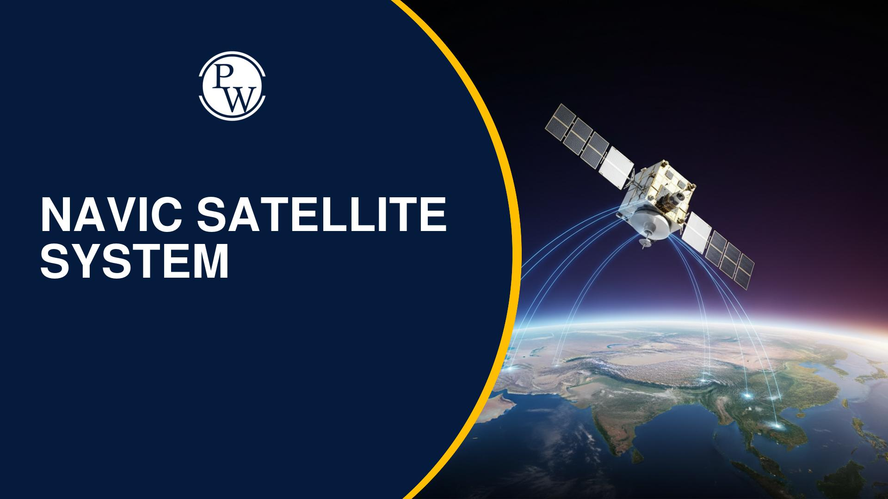

India's own GPS. Seven satellites in geostationary and geosynchronous orbit, providing positioning accuracy better than 20 metres across all of India and 1,500 km beyond its borders. When US GPS is unavailable — NavIC is there. India's sovereign navigation system, built entirely in India.
Watch: NavIC — Lifeline to IndiaNavIC — Navigation with Indian Constellation — is India's independent regional satellite navigation system, developed by ISRO. Officially known as IRNSS (Indian Regional Navigation Satellite System), it provides two levels of service: the Standard Positioning Service (SPS) for civilian use with accuracy better than 20 metres, and the Restricted Service (RS) for strategic applications with higher accuracy.
The constellation became operational in 2016 with seven satellites — three in geostationary orbit (GEO) and four in geosynchronous inclined orbits (GSO). Together, they provide continuous, all-weather navigation coverage over India and a surrounding region extending 1,500 km beyond India's borders.
NavIC operates on two frequency bands — L5 and S — unlike GPS which uses L1 and L2. The dual-frequency design makes NavIC more resistant to ionospheric disturbances — particularly important in India's equatorial region where the ionosphere is more turbulent.
Status as of March 2026: The atomic clock on IRNSS-1F failed, further degrading the legacy constellation. A minimum of 4 satellites are needed for a 3D position fix. The legacy IRNSS constellation is currently operating in a degraded state. The newer NVS-01 (launched May 2023, with L1-band) is providing the most reliable timing signals. Full capability will be restored as the NVS-series (NavIC 2.0) satellites replace the legacy constellation — target: 2027.
The constellation faced a significant technical challenge in 2016–2017 when the Rubidium atomic clocks aboard IRNSS-1A failed — the atomic clock being the heartbeat of any navigation satellite. ISRO launched replacement satellites (IRNSS-1H and 1I) and, critically, developed indigenous atomic clock technology for NavIC 2.0 — eliminating dependence on foreign clock suppliers entirely. A failure that forced India to build something better.
In 1999, during the Kargil War, India requested access to GPS data from the United States to precisely locate Pakistani positions at high altitude. The US denied the request — GPS was a US military asset and they could deny or degrade access at will. India was conducting a war with degraded navigation capability.
That denial was a strategic wake-up call. India decided immediately that it would never again depend on another nation's navigation system for its security. The IRNSS project — which became NavIC — was born from that moment.
Today, NavIC provides India with complete navigation sovereignty. No other nation can turn it off, degrade it, or deny access. India's military, fishermen, disaster responders, and civilians all operate on a system that belongs entirely to India.
Three NavIC satellites sit in geostationary orbit (GEO) at 36,000 km, appearing fixed over India — providing a constant reference signal. Four satellites orbit in geosynchronous inclined orbit (GSO), tracing a figure-eight pattern over India's region throughout the day. Together, at any point in India, at least 4 NavIC satellites are always visible above the horizon — the minimum needed for accurate positioning.
Swipe or click arrows to browse. Click any photo to zoom.

